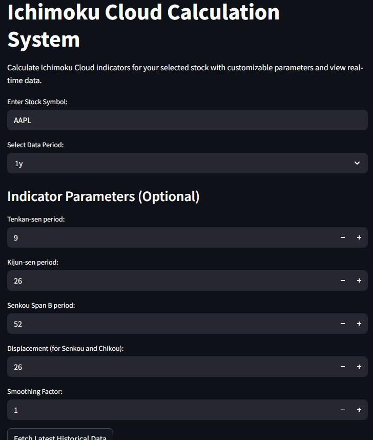
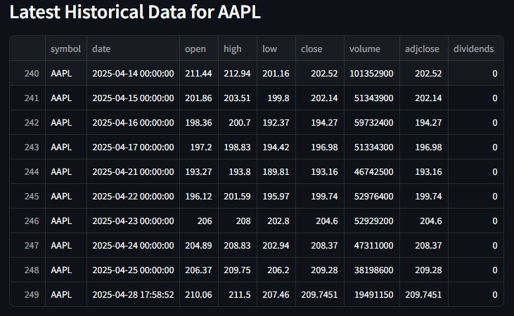
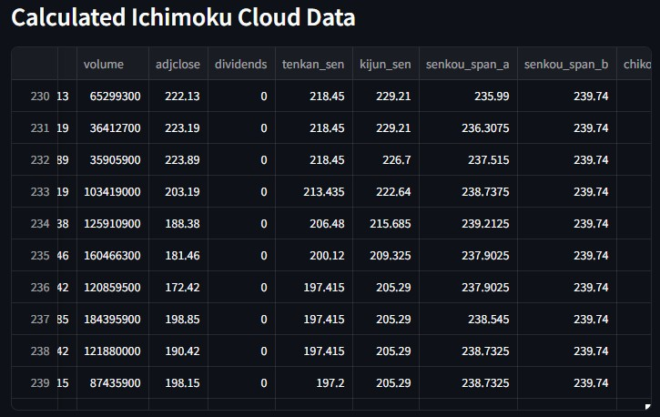
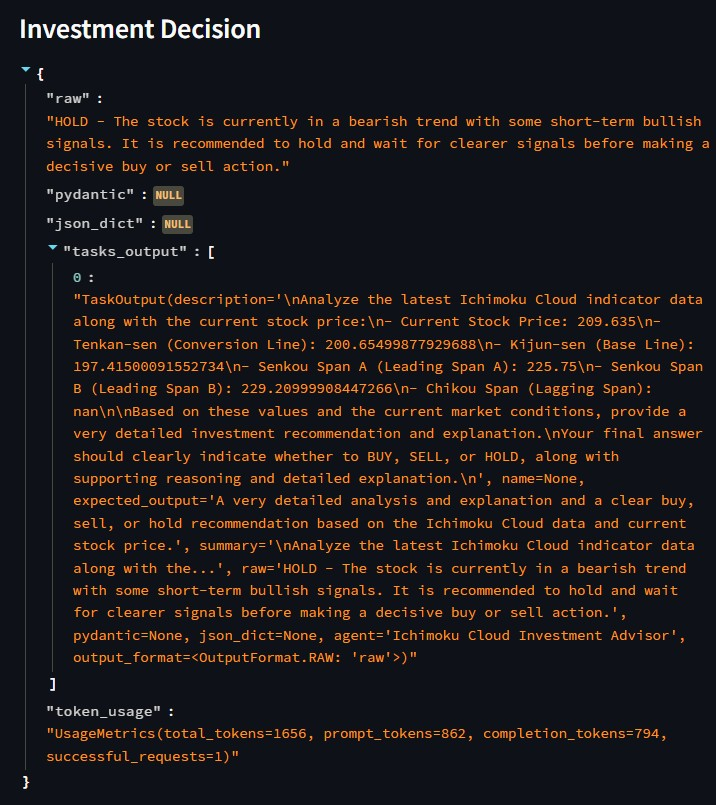
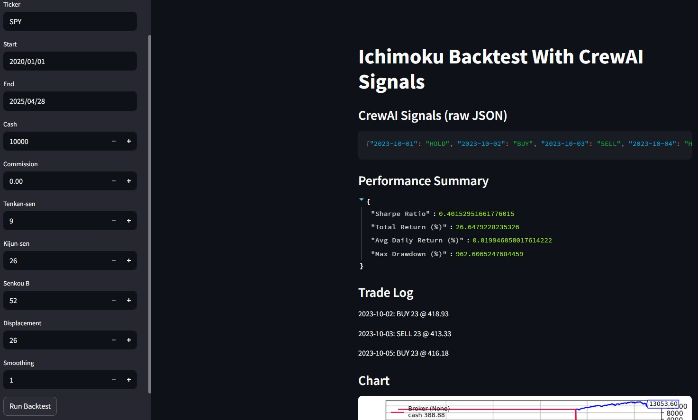

This project calculates Ichimoku Cloud indicators in Python, provides a Streamlit UI for real-time data and parameter tuning, integrates CrewAI agents to output BUY/SELL/HOLD signals, and includes a Backtrader backtesting framework. I implemented the indicator engine, built the UI, wrote and tested the CrewAI agent code, and developed the end-to-end backtest pipeline.
The Ichimoku Cloud Investment Advisor is a Python application that:
| Sprint | Objective |
|---|---|
| 1 | Indicator calculation MVP |
| 2 | CrewAI integration & UI spike |
| 3 | Agent refinement & testing |
| 4 | Backtesting framework & working MVP |
Here I summarize the core functionality delivered for each key user story/task that I personally executed:
| Story/Task | Description | Est. Hrs | Actual Hrs |
|---|---|---|---|
| Ichimoku.1 | Built the rolling-window indicator engine to calculate Ichimoku components. | 20 | 28 |
| Ichimoku.6 | Designed and implemented the Streamlit UI for parameter input and data display. | 20 | 21 |
| Ichimoku.8 | Integrated CrewAI agents and crafted prompts/tasks for BUY/SELL/HOLD recommendations. | 16 | 36 |
| Ichimoku.10 | Wrote unit tests for calculator and integration tests for agent workflows. | 10 | 25 |
| Ichimoku.11 | Developed and validated the Backtrader-based backtesting strategy using AI signals. | 18 | 26 |





| Date | Commit Number | Description | User Story | Task |
|---|---|---|---|---|
| February 1st, 2025 | ea1b1123625d0ac3eac6fd9e5f6d3b9f117261a2 | Add Ichimoku File | Ichimoku | Ichimoku.1 |
| February 1st, 2025 | a421fc0179a4c412e05788924daaab5a33749000 | Add UI code | Ichimoku | Ichimoku.1 |
| February 1st, 2025 | 95ad046364c6fe03ed3b7e3b3437ec90d075bfbe | Delete src/UI/ichimoku.py | Ichimoku | Ichimoku.1 |
| February 1st, 2025 | 61f2db84f3479ed0705ce1a12e6a72d5658e2158 | Rename ichimoku2.py to ichimoku.py | Ichimoku | Ichimoku.1 |
| February 8th, 2025 | 703160c0d6f649f15ac870eef24c892f551173ea | Add customization features and also fetch realtime data | Ichimoku | Ichimoku.6 |
| February 8th, 2025 | fa5ec350fbc050bdfe6b0f13184f171210826c7f | Add live data feed and fetch real time data | Ichimoku | Ichimoku.6 |
| February 26th, 2025 | 95013f3f3d5d5b8b2558cbc475817b694d4fb9c7 | Add Crew AI agents and get investment decision | Ichimoku | Ichimoku.8 |
| March 10th, 2025 | f0630c9944e600aab54539c0f1db4b5ea2a7169d | Updated code | Ichimoku | Ichimoku.8 |
| March 11th, 2025 | 73d612d785a7aae76c62dc3c8d797f30c40e6fbb | Passing the current stock price | Ichimoku | Ichimoku.8 |
| March 25th, 2025 | effa9decc053656d16c3ee4e16c6c37b31edc42f | Ichimoku test cases | Ichimoku | Ichimoku.10 |
| April 12th, 2025 | c04d4f579d4d2a32fb8a149816c92d07f389267f | Ichimoku Backtest Code | Ichimoku | Ichimoku.11 |
| April 22nd, 2025 | a6d0942239f920639ba8243b0b3642c624e2c7d2 | Update Ichimoku cloud backtest code | Ichimoku | Ichimoku.11 |
| April 27th, 2025 | 9909121a498482c22fbf0ce8a73ed5551e025829 | Update Ichimoku Backtest Code | Ichimoku | Ichimoku.11 |
Full list of user stories and acceptance criteria available in GitHub Issue.